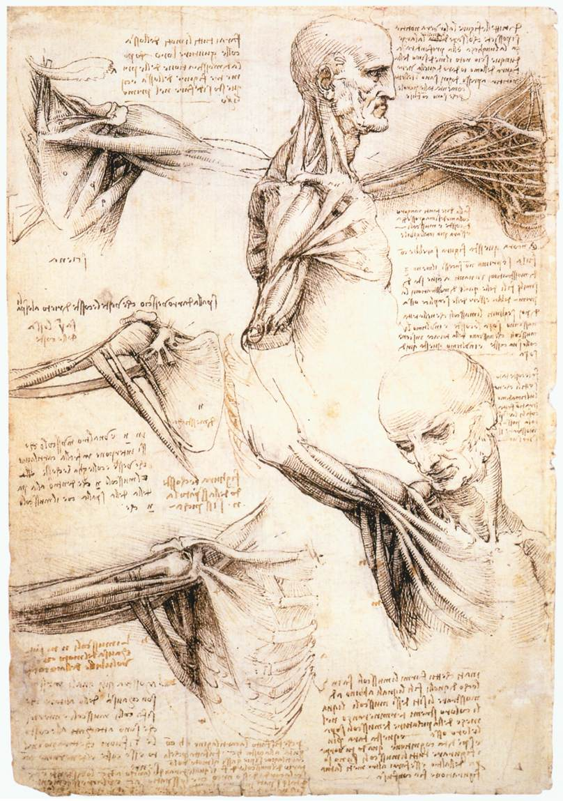
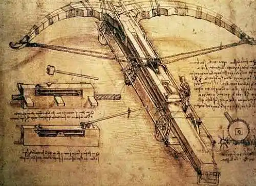
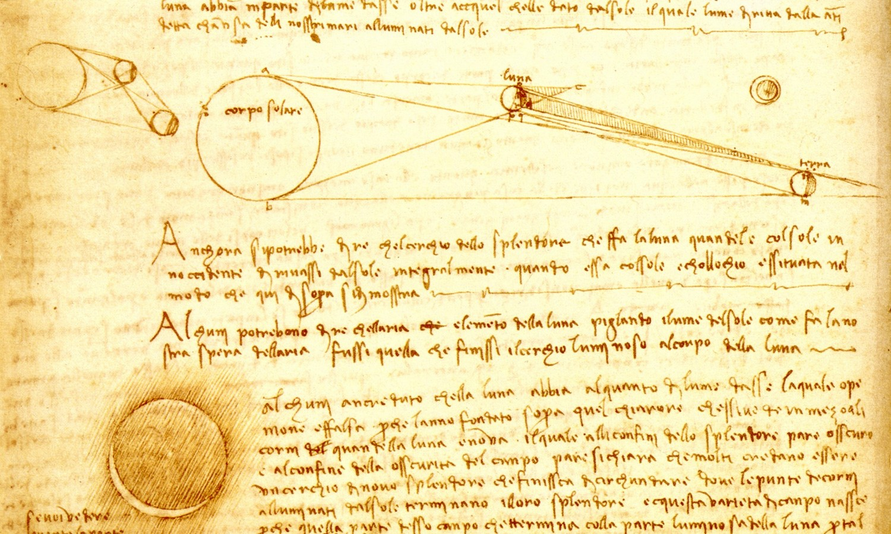

Un génie aux multiples talents
Léonard de Vinci (1452-1519) est principalement connu comme peintre, mais il a également été un scientifique et un inventeur visionnaire. Ses carnets sont remplis de découvertes dans divers domaines tels que l'anatomie, la mécanique, l'astronomie et l'ingénierie.

Les Contributions Scientifiques de Léonard
Anatomie
Léonard a réalisé des dissections humaines et étudié en détail le corps humain. Il a produit des dessins anatomiques incroyablement précis, comprenant des études du cœur, des muscles, et du système nerveux.
Mécanique
Il a imaginé de nombreuses inventions mécaniques, comme des machines de guerre, des ponts, et des dispositifs pour voler. Il a esquissé des projets qui auraient pu révolutionner la mécanique si la technologie de l'époque avait permis leur réalisation.
Astronomie et Optique
Bien que Léonard n'ait pas développé la théorie astronomique moderne, ses observations ont ouvert des portes pour des découvertes futures. Il a étudié les étoiles et la lumière, contribuant à l'étude de l'optique.
L'Héritage Scientifique
Les travaux scientifiques de Léonard de Vinci ont été largement oubliés pendant plusieurs siècles, mais ses carnets ont été redécouverts et ont influencé de nombreux domaines, de l'ingénierie à la médecine moderne.